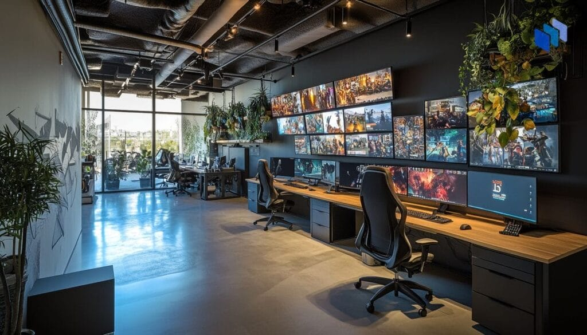
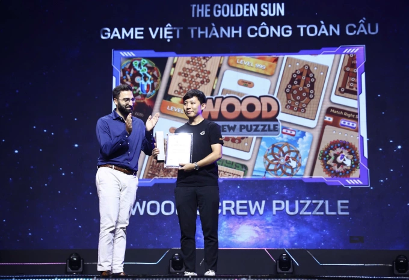
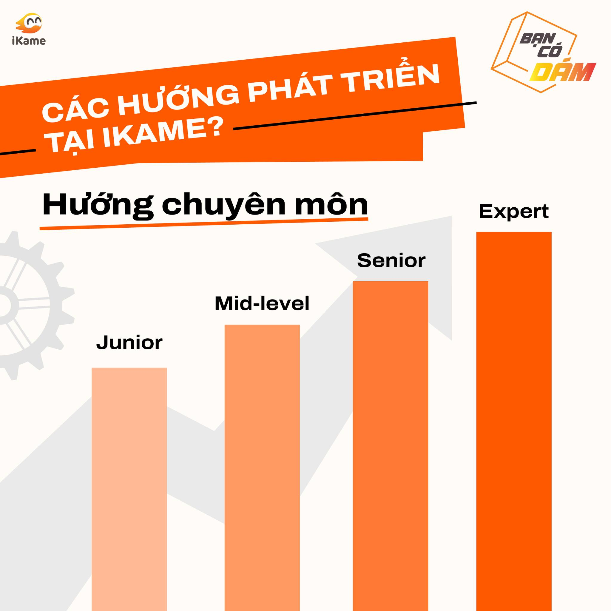

TRẢI NGHIỆM DOANH NGHIỆP TẠI
STUDIO THIẾT KẾ GAME
HÀNG ĐẦU VIỆT NAM - IKAME
Trong bối cảnh ngành công nghiệp game đang trở thành một trong những lĩnh vực công nghệ sáng tạo phát triển nhanh nhất trên thế giới, chương trình trải nghiệm doanh nghiệp tại iKame đã mang đến cho sinh viên cơ hội tiếp cận thực tế với môi trường phát triển game chuyên nghiệp. Không chỉ được tham quan doanh nghiệp, sinh viên còn có dịp khám phá quy trình tạo nên những sản phẩm game phục vụ hàng triệu người dùng trên thị trường quốc tế.

01 BƯỚC VÀO THẾ GIỚI PHÁT TRIỂN GAME CHUYÊN NGHIỆP
Game ngày nay không đơn thuần là một sản phẩm giải trí mà là sự kết hợp giữa công nghệ, thiết kế, nghệ thuật, tâm lý học và trải nghiệm người dùng. Để tạo ra một trò chơi thành công, các doanh nghiệp cần sự phối hợp của nhiều bộ phận với những chuyên môn khác nhau.
Tại iKame, sinh viên được tìm hiểu về toàn bộ quy trình phát triển game từ giai đoạn nghiên cứu thị trường, xây dựng ý tưởng, thiết kế gameplay, phát triển đồ họa, lập trình tính năng cho đến kiểm thử và phát hành sản phẩm. Mỗi công đoạn đều đóng vai trò quan trọng trong việc tạo nên trải nghiệm hấp dẫn cho người chơi.

02 KHÁM PHÁ NHỮNG VỊ TRÍ NGHỀ NGHIỆP TRONG NGÀNH GAME
Một trong những điểm nổi bật của chương trình là phần giới thiệu về hệ sinh thái nghề nghiệp trong ngành công nghiệp game. Khác với suy nghĩ của nhiều người rằng làm game chỉ cần lập trình viên, thực tế đây là lĩnh vực đòi hỏi sự tham gia của nhiều vị trí chuyên môn khác nhau.
Sinh viên được tìm hiểu về vai trò của các Game Developer – những người xây dựng và phát triển các tính năng cốt lõi của trò chơi; Game Designer – người thiết kế luật chơi, cơ chế vận hành và trải nghiệm người dùng; UI/UX Designer – phụ trách giao diện và tương tác; QA Tester – đảm bảo chất lượng sản phẩm trước khi phát hành; Business Analyst (BA) – người kết nối giữa nhu cầu thị trường và đội ngũ phát triển.

03 NGÀNH GAME – ĐIỂM GIAO THOA GIỮA CÔNG NGHỆ VÀ SÁNG TẠO
Thông qua chuyến trải nghiệm, sinh viên nhận thấy ngành game không chỉ dành cho những người yêu thích lập trình mà còn mở ra cơ hội cho những cá nhân có thế mạnh về thiết kế, giáo dục, truyền thông, phân tích dữ liệu hay quản lý dự án.
Những trải nghiệm thực tế tại doanh nghiệp sẽ tiếp tục là cầu nối quan trọng giúp sinh viên Công nghệ Giáo dục và Điện - Điện tử nâng cao năng lực chuyên môn, mở rộng cơ hội nghề nghiệp và sẵn sàng trở thành nguồn nhân lực chất lượng cao trong tương lai.
Bên cạnh việc tham quan doanh nghiệp, sinh viên còn có cơ hội giao lưu trực tiếp với đội ngũ chuyên gia và mentor tại iKame. Những câu chuyện về hành trình nghề nghiệp, các dự án thực tế và những bài học trong quá trình phát triển sản phẩm đã mang đến cho sinh viên cái nhìn chân thực về ngành công nghiệp game. Giải đáp những thắc mắc về nghề nghiệp, các mentor còn chia sẻ những kỹ năng quan trọng mà sinh viên cần chuẩn bị như tư duy giải quyết vấn đề, khả năng làm việc nhóm, ngoại ngữ, kỹ năng công nghệ và tinh thần học hỏi liên tục để thích nghi với sự thay đổi nhanh chóng của ngành.

04 TRẢI NGHIỆM THỰC TẾ – NGUỒN CẢM HỨNG CHO TƯƠNG LAI
Chuyến tham quan tại iKame không chỉ giúp sinh viên hiểu hơn về ngành game mà còn mở ra những góc nhìn mới về cơ hội nghề nghiệp trong lĩnh vực phát triển game và tiềm năng công nghiệp Game trong tương lai. Những dự án, câu chuyện thành công và môi trường làm việc năng động tại doanh nghiệp đã truyền cảm hứng để sinh viên chủ động học tập, khám phá bản thân và xây dựng định hướng nghề nghiệp rõ ràng hơn.
Thông qua hoạt động trải nghiệm doanh nghiệp, sinh viên được kết nối với thực tiễn ngành nghề, tiếp cận những xu hướng công nghệ mới và chuẩn bị hành trang cần thiết cho thị trường lao động trong tương lai. Đây cũng là minh chứng cho nỗ lực gắn kết giữa nhà trường và doanh nghiệp nhằm mang đến những cơ hội học tập thực tiễn, giúp sinh viên phát triển toàn diện cả về kiến thức, kỹ năng và tư duy nghề nghiệp.
